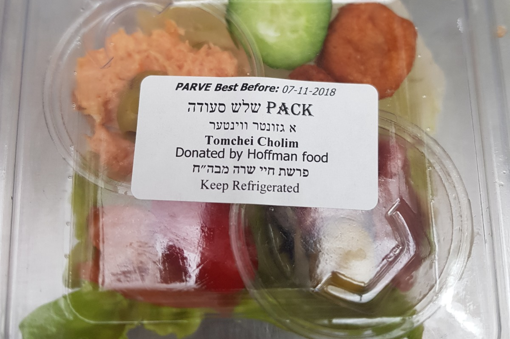
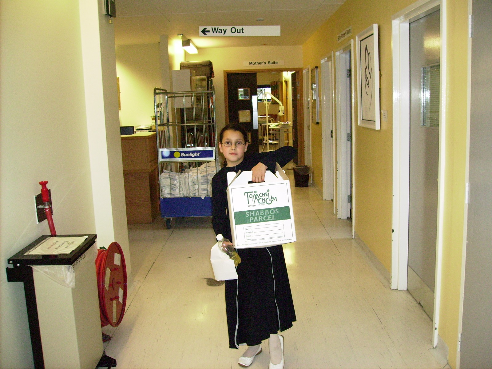

Welcome to Tomchei Cholim UK
Supporting Those in Need
with Care and Compassion
At Tomchei Cholim, we are dedicated to supporting individuals facing health challenges, ensuring they receive the care, comfort, and assistance they need.
Through our extensive network of volunteers, we provide vital services to hospital patients and those confined to their homes, bringing warmth, care, and a sense of community in times of need.
Our Story
In the winter of 1998/99, our founder, Yaakov Gluck, encountered a man undergoing dialysis who was struggling with the distress of his condition. Seeing his difficulties, Yaakov stepped in to help in any way he could. His acts of kindness did not go unnoticed—the hospital staff at Royal Hospital were deeply impressed by his dedication, and in response, they went the extra mile in their care for the patient.
After overcoming many challenges, the patient eventually moved to a care home. Later, when his granddaughter got married abroad, a special "second wedding" was arranged so that he could also take part in the celebrations. Community members gathered to make it a joyous occasion, demonstrating how one act of kindness had sparked a movement of compassion and support.

This attention to the needs of a single patient became the foundation for what is now Tomchei Cholim. Our core ethos remains unchanged—a deep commitment to each individual patient, ensuring their needs are met with dignity, care, and kindness.
Today, we have over 60 volunteers with a wide range of skills, yet the common thread uniting them is a kind heart and a true desire to help others.
Our Services
The Sabbath Package

To bring comfort and joy to those in need, we provide beautifully prepared traditional kosher food for Shabbat. Our packages include challah, grape juice, a newspaper, biscuits, and other essentials—ensuring that patients and housebound individuals can still experience the sanctity of Shabbat in a meaningful way.
Visits
Every recipient of the Sabbath Package is also visited by our dedicated volunteers, offering emotional support, companionship, and assistance wherever possible. These visits provide much-needed encouragement and practical help to those going through difficult times.
Car Service
Our newly launched Shabbos Car Service supports individuals who need to attend hospital on Shabbos for non-life-threatening situations—particularly where the regular Jewish ambulance service does not operate, as it is reserved for emergencies only.
This is where Tomchei Cholim steps in. We provide trained drivers who are knowledgeable about the halachos (Jewish laws) of Shabbos. These volunteers assist passengers with tasks that would otherwise be prohibited—such as carrying bags from the house to the car, opening doors, and managing belongings upon arrival at the hospital.
Importantly, payment is not made on Shabbos. All financial arrangements are handled afterwards, allowing patients to maintain full Shabbos observance with peace of mind.
In emergency cases, patients are often taken to hospital by ambulance, but left stranded afterwards, with no Shabbos-safe way to return home. Our service fills that critical gap. Hospitals and A&E departments can contact our dedicated line, and we will dispatch a driver to bring the patient home under halachically appropriate conditions.
This initiative ensures that individuals can access essential care when needed—without compromising their Shabbos observance.
Provision of "Light" Medical Equipment
To assist those recovering at home, we lend out essential medical equipment, such as wheelchairs, walkers, and other mobility aids, helping individuals regain independence and comfort during their recovery.
An Energy Boost for New Mothers

Welcoming a new life into the world is a special time, but it can also be exhausting. Our maternity ward packages include drinks, cakes, and other nourishing treats to provide an energy boost for new mothers as they recover and care for their newborns.
Special Occasions
We believe in the importance of celebrating Jewish traditions even in challenging times. Whether it’s Yom Tov, Purim, or another special occasion, we ensure those in need can observe and celebrate with dignity, providing festive food and other essentials.
Future Plans
New Kitchen
To maintain the highest standards of cleanliness and kashrut, we are planning to build a dedicated kitchen. This will allow us to prepare meals under strict supervision, ensuring quality and adherence to dietary laws. Additionally, having our own kitchen will enable meals to be kept in hospital fridges and distributed by nurses on Shabbat, ensuring that no patient is left without a meal. Currently, patients who arrive on Shabbat often miss our standard distribution—this initiative will solve that issue.
Dedicated Van for Homebound Patients
Homebound patients often experience a lower quality of life due to their limited mobility. We plan to acquire a dedicated van to assist with transportation, helping individuals attend doctor appointments, prayers, shopping trips, and even visits to the park. This initiative aims to combat loneliness, improve social engagement, and enhance their overall well-being.
Kosher Breakfast in Hospitals
Currently, there are very few kosher breakfast options available in UK hospitals. To address this, we plan to provide kosher breakfasts twice a week, ensuring that Jewish patients have access to nutritious, suitable meals during their hospital stay.
Q & A
What is Tomchei Cholim?
Often described as the "Guardians of the Bedridden", Tomchei Cholim is dedicated to caring for all the needs of patients—both in hospital and beyond. In addition to our direct support, we also provide crucial links to other organisations that can assist with additional services.
How many volunteers contribute to Tomchei Cholim?
We are fortunate to have around 60 volunteers who engage in a wide range of activities, including preparing meals, delivering packages, offering emotional support, assisting with transport, and lending out medical equipment.
What is the most important aspect of the Sabbath Package?
When a patient is in the hospital, they often feel lost, unfamiliar with the environment, and alone. The Sabbath Package not only provides essential items but also serves as an emotional lift, offering encouragement and reassurance that they are not forgotten.
What are the most important things that still need to be done?
We aim to expand our reach to more hospitals, ensuring that no Jewish patient is left without support during their hospital stay.
How do recipients express their appreciation?
We receive heartfelt letters of gratitude, reflecting the deep impact of our services. One of the most common questions we hear from recipients is: "Why don’t you do more?"—a testament to the significant need for our work.
How can people support Tomchei Cholim?
Whether through monetary donations or volunteering time, everyone can make a difference. Any support, big or small, allows us to continue assisting those in need and expand our services to help even more patients and families.